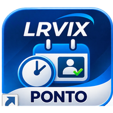

LRVIX PONTO
Instale este atalho como aplicativo para ter acesso rápido ao sistema.
ABRIR SISTEMAWindows/Android: use a opção Instalar aplicativo do navegador. iPhone: Compartilhar → Adicionar à Tela de Início. O sistema requer internet e abre no Streamlit.